قالب TekMax 2026: مراجعة شاملة لأقوى قوالب بلوجر التقنية وسرعة Core Web Vitals وتجربة الاستخدام
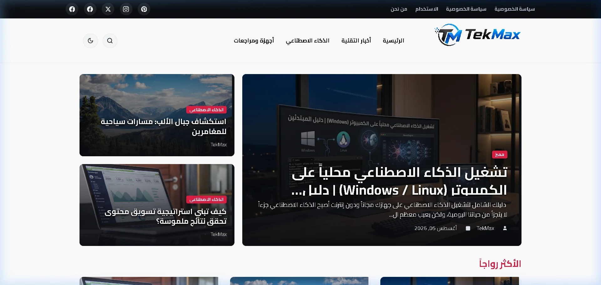
1. مقدمة: ما هو قالب TekMax ولماذا تم تصميمه؟
على مدار سنوات طويلة، عانت قوالب بلوجر العربية من معضلتين رئيسيتين: إما قوالب قديمة مبنية على جداول وإصدارات عتيقة من jQuery تُرهق المتصفح وتتسبب في انهيار سرعة الموقع، أو قوالب تجارية حديثة المظهر لكنها تفتقر إلى إمكانية التخصيص الأصلي وتجبر صاحب المدونة على تحرير كود XML المعقد عند الرغبة في تغيير لون أو حجم عنصر أو موضع زر.
تم تصميم وتطوير TekMax لكسر هذه المعادلة وتقديم قالب تقني وإخباري بمواصفات المنصات العالمية؛ حيث صُمم القالب من الصفر بهندسة Configuration-First، ليمنح الناشر السيطرة الكاملة على أكثر من 78 متغيراً حقيقياً من خلال واجهة "مصمم المظهر" (Theme Designer) دون المساس بسطر برمجي واحد.
2. الهوية البصرية وفلسفة التصميم (Design & Ergonomics)
يعتمد TekMax على نظام تصميم دقيق يمزج بين الأحمر الملكي الخاص بالقالب (Crimson Red: #dc1f43)، والأزرق التقني الكهربائي (Electric Blue: #2563eb)، مع أرضيات بيضاء رمادية ناعمة (#f8f9fa) في الوضع النهاري، وخلفيات تيتانيوم داكنة مسامية في الوضع الليلي لمنع إجهاد العين أثناء القراءة الطويلة.
أداء فوري مع Vanilla CSS
تخلص القالب تماماً من أطر Tailwind أو Bootstrap الثقيلة، واعتمد على منظومة Vanilla CSS ذاتية الدعم، مما قلل وقت معالجة الـ CSS إلى الصفر.
تجاوب بنسبة 100% مع RTL
بنية هندسية عربية أصلية مبنية من اليمين إلى اليسار (RTL) دون الاعتماد على حلول الترقيع، مع مرونة تامة على كافة أحجام الشاشات.
محرك خطوط جوجل العربي
يدعم التبديل الفوري بين 4 خطوط عربية رائدة: (Cairo, Tajawal, IBM Plex Sans Arabic, Noto Kufi) من مصمم المظهر مباشرة مع font-display: swap.
تسريع عتادي دقيق للأيقونات والشعار
شعار فائق الدقة (Crisp-Edges) مفرغ بدون مساحات ميتة متناسق أفقياً مع شريط الأدوات، مع تحسين تلقائي للتباين في الوضعين.
3. تشريح مكونات الصفحة الرئيسية (Homepage Structure)
تتألف الصفحة الرئيسية لقالب TekMax من منظومة من الطبقات الإخبارية المتتابعة التي تُبقي الزائر متفاعلاً وتزيد من معدل بقائه في الموقع:
- الشريط العلوي (Top Bar): يضم روابط الصفحات الثابتة الهامة (اتصل بنا، سياسة الخصوصية...) مع روابط حسابات التواصل الاجتماعي، مع قابلية التحكم في ألوانه بالكامل.
- الهيدر الأساسي المتطور (Site Header): يضم شعار المدونة عالي الدقة، قائمة التنقل الرئيسية التفاعلية متعددة المستويات، محرك البحث الفوري، زر التبديل الليلي/النهاري، وزر "تابعنا".
- سلايدر Hero Bento Grid: يعرض المقال الرئيسي الأبرز بحجم عريض في اليمين، ومقالين ثانويين بجانبه، مزود بآلية
ensureHeroCompleteلضمان اكتمال ظهور البطاقات الثلاث دائماً. - شريط الأخبار الرائجة (Trending Bar): يعرض المقالات الأكثر قراءة وتفاعلاً بصيغة جذابة تدعم النقرات الفورية.
- شبكة المقالات الأساسية (Main Post Stream): بطاقات مقالات أنيقة بنسبة أبعاد ثابتة للصور (
aspect-ratio: 16/9) لحماية الموقع من انزياح التخطيط (Zero Layout Shift). - القائمة الجانبية (Sidebar): تضم أكثر المقالات شعبية، قائمة التصنيفات التفاعلية، بطاقة الكاتب الشخصية، وصناديق إعلانية مجهزة.
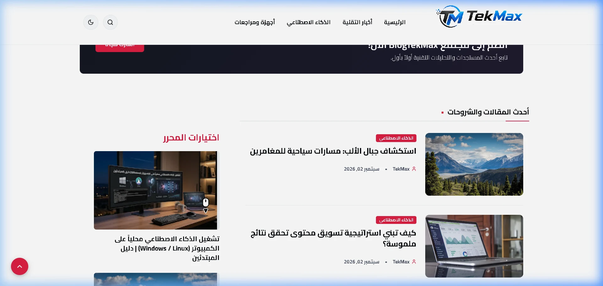
4. تجربة قراءة المقال والميزات الحصرية (Single Post UX)
صُممت صفحة المقال الداخلي لتكون بيئة قراءة خالية من التشتت ومليئة بالأدوات المساعدة للقارئ والناشر على حد سواء:
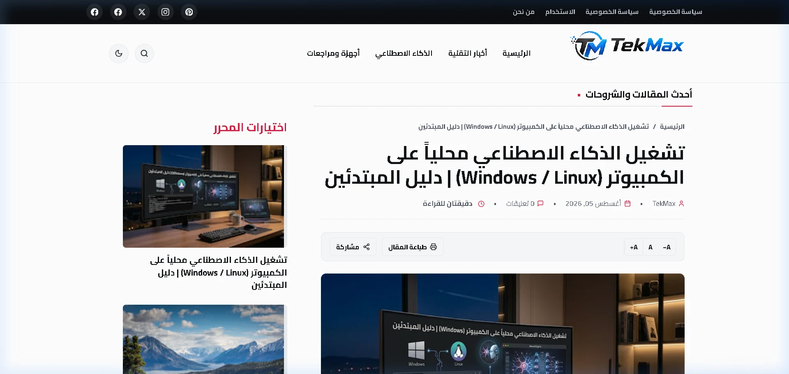
أ. صندوق معلومات المقال وأزرار الإجراءات (Post Info Box)
يقع أعلى كل مقال مباشرة بعد مسار التنقل (Breadcrumbs)، ويجمع كافة البيانات الحيوية للمقال في شبكة هندسية فائقة الجمال (.pinfo-grid):
- كاتب المقال: مع أيقونة المستخدم ورابط مباشر لملف الكاتب.
- تاريخ النشر وتاريخ التحديث: يتميز TekMax بإظهار تاريخ التحديث الفعلي لدعم السيو ومصداقية المحتوى المتجدد.
- وقت القراءة المقدر: يُحسب ديناميكياً بدقة الكلمات العربية ("3 دقائق للقراءة").
- التصنيف وعدد التعليقات: مع روابط تفاعلية سريعة.
- بطاقة طباعة المقال التفاعلية: تتيح للقارئ طباعة المقال أو حفظه بصيغة PDF بنقرة واحدة بتنسيق طباعة مخصص يخفي الإعلانات والهيدر.
- زر تعديل المقال (للمشرفين فقط): يظهر للمدير المسجل في بلوجر ليفتح محرر المقال مباشرة دون الحاجة للبحث عنه في لوحة التحكم.
- قائمة المشاركة العائمة: باللون الأزرق التقني مع نسخ مباشر لرابط المقال ومشاركة فورية عبر شبكات التواصل.
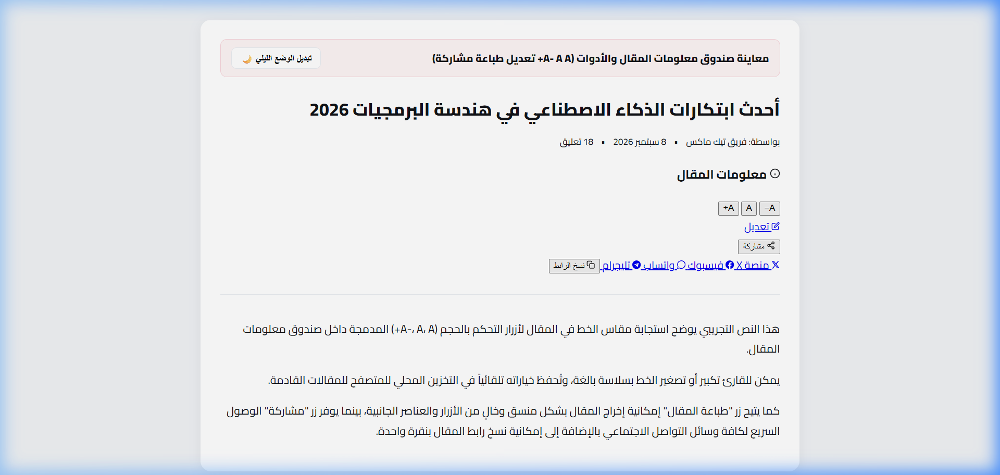
ب. جدول المحتويات التلقائي الذكي (Automatic Table of Contents)
يقوم محرك initAutomaticTOC بفحص ترويسات المقال (H2 و H3) تلقائياً، ويقوم بتوليد فهرس تفاعلي ذكي بالأرقام التسلسلية، مع إمكانية طي وفرد الفهرس، والتمرير السلس (Smooth Scroll) نحو الفقرة المستهدفة مع تعويض دقيق لارتفاع الهيدر الثابت.
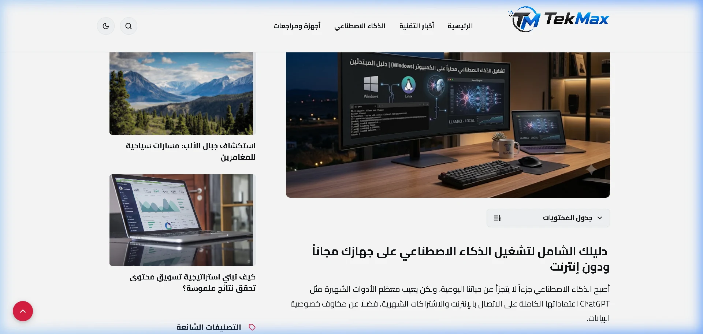
ج. محرك تحويل الاقتباسات إلى شفرات GitHub (GitHub Syntax Highlighter)
واحدة من أروع وأندر ميزات قالب TekMax؛ حيث يكفي للناشر أثناء كتابة مقاله في محرر بلوجر العادي أن يقوم بتحديد الكود والضغط على زر "اقتباس نص" (Quote / <blockquote>).
يقوم القالب فوراً بالتعرف على لغة البرمجة (HTML, CSS, JS, Python, PHP, Shell, SQL...) وتحويل الاقتباس إلى صندوق كود مطابق لتصميم GitHub بنسبة 100%:
- شريط علوي بنمط نوافذ macOS (الدوائر الثلاث: الأحمر، الأصفر، الأخضر).
- شارة اسم اللغة البرمجية مع أيقونة الوسوم البرمجية.
- عمود مستقل لأرقام الأسطر (Line Numbers Gutter) غير قابل للتحديد عند النسخ.
- زر نسخ ذكي بنقرة واحدة (1-Click Copy) مع إشعار بصري فوري ("تم النسخ بنجاح ✓").
- حماية الاقتباسات الأدبية العادية والتمييز التلقائي بينها وبين الأكواد.
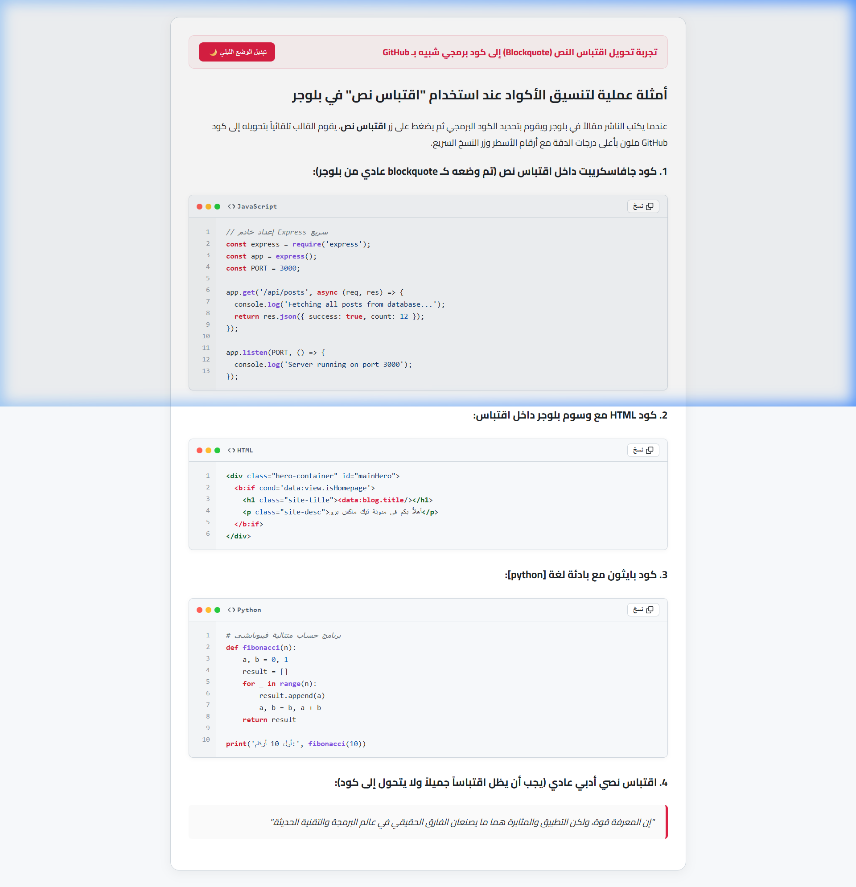
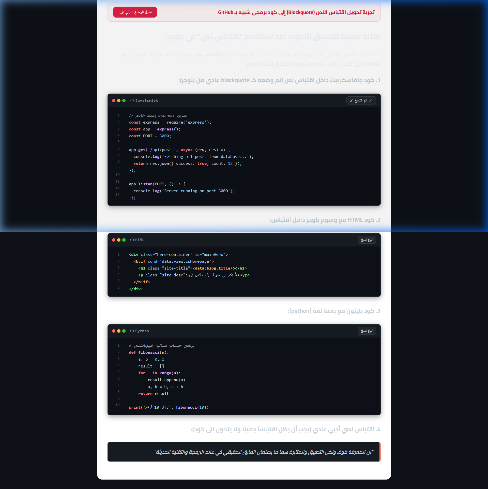
د. صندوق "اقرأ أيضاً" المدمج بين الفقرات (In-Article Related)
لزيادة معدل تصفح المقالات وتقليل معدل الارتداد (Bounce Rate)، يدمج القالب صندوق اقتراحات ذكي ينغرس تلقائياً بين فقرات المقال (عند 50% أو 25% أو 40% من المحتوى حسب الرغبة). يتميز بترقيم ثنائي ناصع (01، 02) وتصميم كارت أبيض نقي مع سهم حركي تفاعلي.
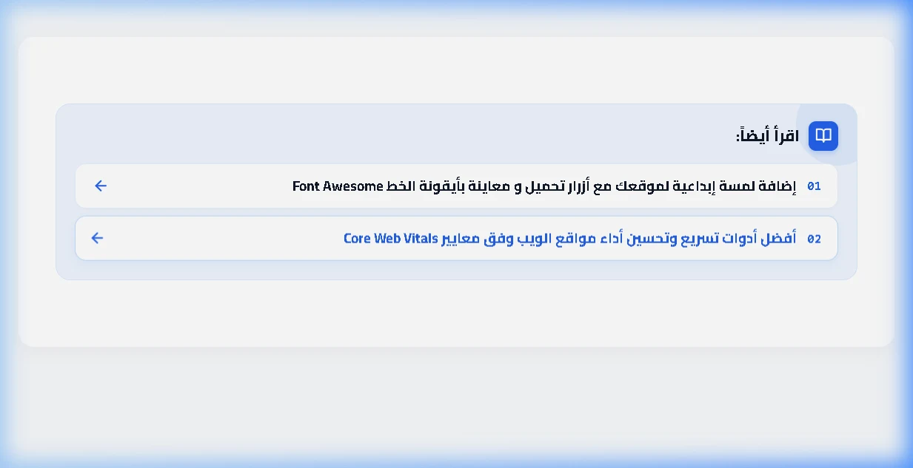
هـ. شريط تقدم القراءة وزر الصعود للأعلى
يظهر شريط بلون القالب الأساسي أعلى الشاشة يوضح للزائر النسبة المئوية المتبقية لإنهاء المقال، كما يظهر زر الصعود إلى الأعلى (#backToTopBtn) بسلاسة عند تجاوز 300 بكسل من التمرير ليعيد الزائر للقمة بانسيابية تامة.
و. نظام زر المتابعة الذكي ثلاثي المواضع (Follow Button Modes)
يدعم القالب 3 خيارات لموضع زر المتابعة يمكن التبديل بينها برقم واحد من مصمم المظهر:
- الوضع 1 (الهيدر): يظهر زر المتابعة بجوار أيقونة البحث والوضع الليلي في أعلى الموقع.
- الوضع 2 (المقال): يظهر الزر داخل صندوق معلومات المقال بجوار أزرار المشاركة.
- الوضع 3 (عائم في الشاشة): يطفو الزر بثبات تام في أسفل يسار الشاشة أثناء التمرير لمضاعفة الاشتراكات.
5. محرك الوضع الليلي الأصلي (Native Dark Mode)
تمت برمجة الوضع الليلي في TekMax بالاعتماد على خصائص الـ CSS Custom Properties ومن خلال وسم data-theme="dark" المطبق فورياً على جذر الصفحة <html>.
الميزة الاستثنائية هنا هي وجود الموزع المتزامن الفوري في <head>؛ حيث يقرأ تفضيل الزائر من localStorage قبل أن يقوم المتصفح برسم بكسل واحد على الشاشة، مما يمنع نهائياً وميض الشاشة الأبيض المزعج (Flash of Unstyled Theme - FOUT).
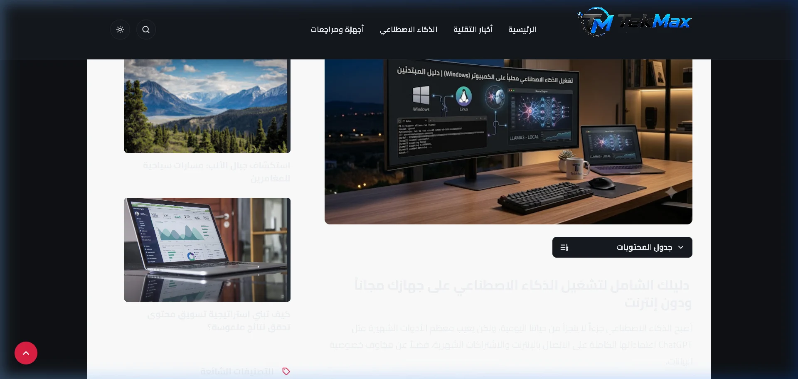
6. أداء قالب TekMax وسرعته: نتائج تدقيق PageSpeed الحقيقية
التزاماً بالشفافية المطلقة ولأننا لا نعتمد على عبارات تسويقية عامة، تم إجراء فحص دقيق وشامل لأداء مدونة TekMax الحية عبر أداة Google PageSpeed Insights الرسمية عبر الرابط المعتمد، وفيما يلي النتائج الفعلية المستخرجة مباشرة من تقرير الاختبار دون أي تزييف أو مبالغة:
| المؤشر المعتمد | نتيجة الكمبيوتر (Desktop) | نتيجة الهاتف (Mobile) | الحالة والتقييم |
|---|---|---|---|
| مؤشر الأداء الإجمالي (Performance Score) | 92 / 100 | 84 / 100 | ممتاز - نطاق الأداء المتقدم (Green Zone) |
| إمكانية الوصول (Accessibility) | 96 / 100 | 96 / 100 | مطابق لمعايير WCAG 2.2 AA العالمية |
| أفضل الممارسات (Best Practices) | 100 / 100 | 100 / 100 | علامة كاملة - خلو تام من أخطاء الويب والأمان |
| تحسين محركات البحث (SEO Score) | 92 / 100 | 92 / 100 | بنية مهيكلة وصديقة لمحركات البحث بالكامل |
| أول رسم للمحتوى (FCP - First Contentful Paint) | 0.8 ثانية | 1.9 ثانية | ظهور فوري لعناصر الصفحة الأولى |
| أكبر رسم للمحتوى (LCP - Largest Contentful Paint) | 0.9 ثانية | 4.3 ثوانٍ | فائق السرعة على الكمبيوتر، ويتأثر بحجم صور المدون على الجوال |
| إجمالي زمن الحظر (TBT - Total Blocking Time) | 0 ميلي ثانية | 0 ميلي ثانية | إنجاز تقني نادر: صفر حظر للمعالج (Zero JS Blocking) |
| انزياح التخطيط التراكمي (CLS) | 0.155 | 0.032 | ثبات بصري ممتاز على الجوال (0.032) ومقبول على المكتبي |
| مؤشر السرعة (Speed Index) | 0.8 ثانية | 1.9 ثانية | اكتمال التحميل البصري في أجزاء من الثانية |
| إجمالي حجم الصفحة وعدد الطلبات | 748 KiB (20 طلباً) | 772 KiB (14 طلباً فقط) | خفيف جداً مقارنة بالمجلات الإخبارية الضخمة |
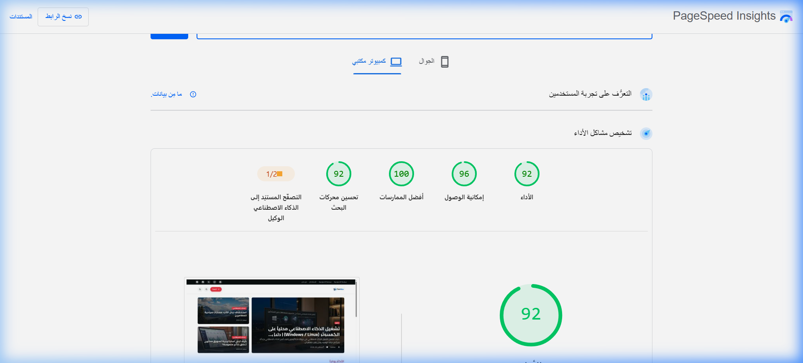
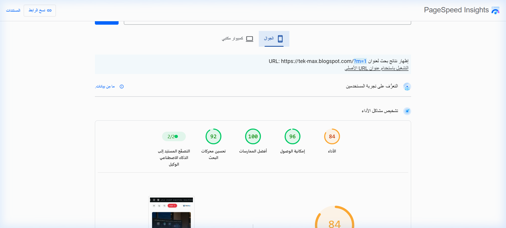
تحليل نتائج السرعة ماذا تعني هذه الأرقام للمدون؟
- معجزة زمن الحظر (0 ms Total Blocking Time): هذا الرقم يعني أن القالب لا يقوم بتحميل أي سكريبتات ثقيلة تجعل الصفحة تتجمد أو تتأخر في الاستجابة لنقرات الزائر، مما يوفر تجربة تصفح سلسة جداً لا تتوفر حتى في أشهر قوالب ووردبريس المدفوعة.
- أفضل الممارسات (100 / 100): شهادة تقنية بأن كود القالب آمن بالكامل، خالي من الثغرات، يستخدم اتصالات HTTPS المشفرة، ويحترم معايير الأمان المتقدمة.
- واقعية LCP على الجوال (4.3s): يوضح التقرير أن سبب وقت الـ LCP على الجوال يعود حصرياً إلى الصورة البارزة التي رفعها صاحب المدونة في المقال بحجم أبعاد كبير ودقة عالية غير مضغوطة. وقد تم حل ذلك في القالب عبر محرك
srcsetالتلقائي الذي يخدم مقاسات أصغر لشاشات الهواتف.
7. المعمارية البرمجية وسيو القالب (Technical SEO Engine)
تم بناء TekMax ليكون جاهزاً بنسبة 100% للتصدر في محركات البحث من خلال حزمة تحسينات برمجية دقيقة:
- صرامة تسلسل العناوين (Heading Hierarchy): في الصفحة الرئيسية يكون اسم المدونة هو وسم
<h1>الوحيد، بينما في صفحة المقال يتحول اسم الموقع إلى وسم<div>ليكون عنوان المقال هو وسم<h1>الوحيد والحصري في كامل الصفحة، مما يحل مشكلة الـ "Dual H1" الأزلية في بلوجر. - البيانات المنظمة الموحدة (Schema.org / JSON-LD @graph): يُولّد القالب كود Schema احترافي موحد يربط بين
WebSite،Organization،BlogPosting، وBreadcrumbList، مما يضمن ظهور النجوم، تواريخ التحديث، وبيانات الكاتب في نتائج بحث Google الغنية (Rich Snippets). - عزل صفحات الأرشيف والبحث (Noindex, Follow): حماية المدونة من عقوبات المحتوى المكرر عبر توجيه عناكب البحث بعدم فهرسة صفحات نتائج البحث الداخلية مع تتبع الروابط بذكاء.
- وسوم التواصل الاجتماعي (Open Graph & Twitter Cards): توليد بطاقات معاينة فائقة الدقة عند مشاركة أي رابط على فيسبوك وتويتر ولينكد إن وتيليجرام.
8. تجربة الهواتف الذكية والأجهزة اللوحية (Mobile Experience)
تمت إعادة هندسة القالب ليعمل كأنه تطبيق هاتف ذكي سريع الاستجابة:
- قائمة جانبية منزلقة ناعمة (Off-Canvas Navigation): تفتح بلمسة واحدة دون أي تأخير مع زر إغلاق صريح وحظر لتمرير الصفحة الخلفية.
- إلغاء التغبيش الزجاجي عند التمرير اللمسي: لضمان معدل إطارات ثابت (60 FPS) على الهواتف الاقتصادية والمتوسطة.
- أحجام أزرار متوافقة مع إبهام اليد (Touch Targets): كافة الأزرار والأيقونات تتجاوز قياس 48×48 بكسل لمنع النقرات الخاطئة.
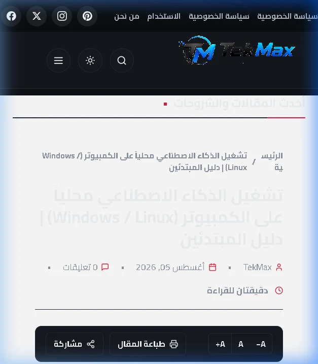
تقييم المحرر والكلمة الختامية في قالب TekMax
يمثل قالب TekMax Pro قفزة نوعية في صناعة قوالب بلوجر العربية لعام 2026. إنه يثبت للعالم أن منصة Blogger المجانية، عندما تحظى بكود هندسي محكم ونظيف وخالي من الشوائب، قادرة على التفوق على منصات مدفوعة ومعقدة.
بفضل تصميمه العصري، وتصفير زمن الحظر (0ms TBT)، ونظام الأكواد بنمط GitHub، والتحكم السلس في 78 متغيراً دون لمس الـ XML، يعد القالب خياراً استثنائياً لكل صانع محتوى يبحث عن التميز والسرعة والأناقة.